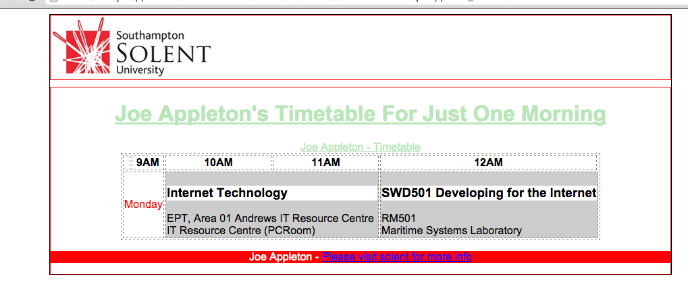

Session 3 Tasks
Task 1 CSS
It's time to start to make our web pages look a little bit nicer using CSS. Remember, we won't cover all style possibilities, there are so many! So please refer to http://www.w3schools.com/css/ if you want to get more creative.
1 Set up site structure
- Create a new folder in your internet_tech directory called
session3 - Copy your timetable HTML page into
session3 - Create a folder in
session3calledstylesand within it create the file style.css the css extension is vital. Remember this is a style sheet not a HTML document. - Now we need to link to the style sheet from our timetable HTML page. This is done for you if you've used the HTML5 template from session 2. If not, you'll need to enter the following in the
<head>...</head>section of your page:<link rel="stylesheet" href="css/styles.css?v=1.0">
1.1 Section up your page using <div> , <span>, id , class tags and attributes
Below is how my timetable HTML looks. (This is only the <body>...</body> section, not the entire document)
Observe how all of the content is wrapped in a <div id="wrapper"> ... </div> this is good practice, so don't miss this out.
Also, mark the closing </div> tags with a comment e.g. <!--[END]#section-->. Add in a <div id="header">.. </div>, <div id="section">.. </div> and
<div id="footer">.. </div>
At this stage your page won't actually look any different, we're just splitting the document up into intuitive sections.
<body>
<div id="wrapper">
<div id="header">
<img src="img/solent_logo.png" alt="solent logo">
</div> <!--[END]#header-->
<div id="section">
<h1>Joe Appleton's Timetable For Just One Morning</h1>
<table>
<caption> Joe Appleton - Timetable </caption>
<tr>
<th> </th>
<th>9AM</th>
<th>10AM</th>
<th>11AM</th>
<th>12AM</th>
</tr>
<tr>
<td class="day">
Monday
</td>
<td colspan="2" class="hour">
<h3>Internet Technology</h3>
EPT, Area 01 Andrews IT Resource Centre <br> <span class="group"> IT Resource Centre (PCRoom) </span>
</td>
<td colspan="2" class="hour">
<h3>SWD501 Developing for the Internet</h3>
<span class="room"> RM501 </span> <br> <span class="group">Maritime Systems</span> Laboratory
</td>
</tr>
</table>
</div> <!--[END]#section-->
<div id="footer">
<p><span class="myname"> Joe Appleton - </span> <a href="http://www.solent.ac.uk"> Please visit solent for more info </a>
</div><!--[END]#footer-->
</div><!--[END]#wrapper -->
</body>
1.3 Add some css rules
Now we need to add some style rules into styles.css, as we've linked this file into our HTML page it will control the look and feel of the timetable webpage. Furthermore, as this style sheet is external we can create new HTML pages with the same look and feel by just including this style sheet!
Have a look at the appendix to see what my styles look like to control the look and feel of my HTML
Please get as creative as you like, but as a minimum I'd like to see:
- A
font-familyset up for the body (this will set the font for your whole page) - Align
h1centre, usetext-align - Change the colour of some of your table cells use
background-color - Style multiple elements with one rule set, your table is a good way to show this off
table,th,td { border: 1px dashed grey; margin: 0px auto; } - Apply styles using both classes and id's, remember id's are for unique elements on the page like
#footer.
Optional - Have a play and see if you can work out how I aligned elements such as the table and the wrapper div in the middle of the page
3 Validate your HTML
Make sure your HTML is valid using the W3C validator. https://validator.w3.org/
4 Appendix
